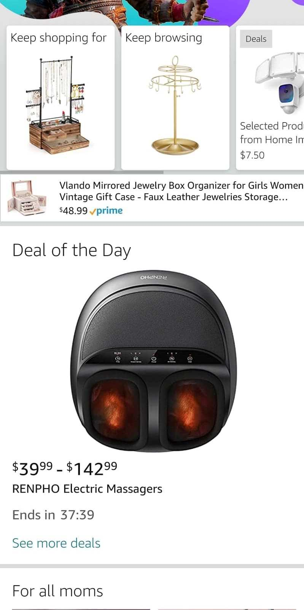
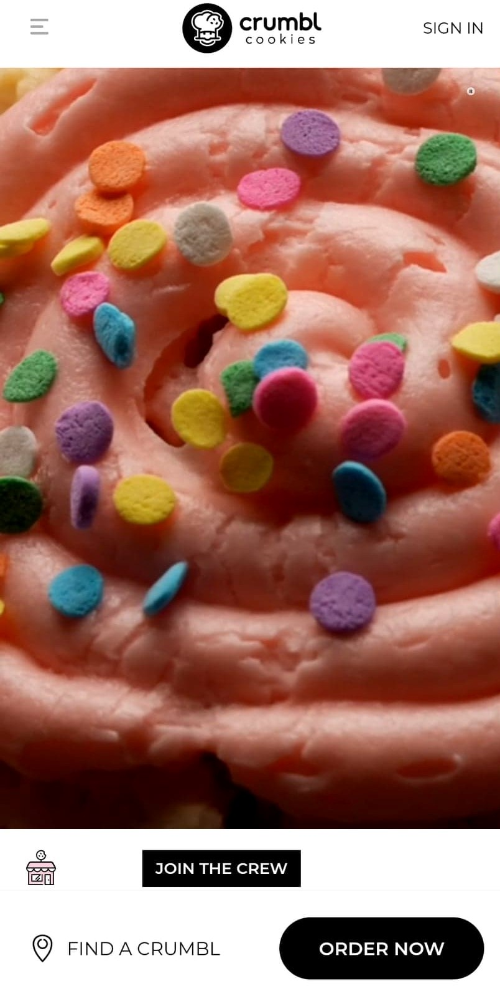
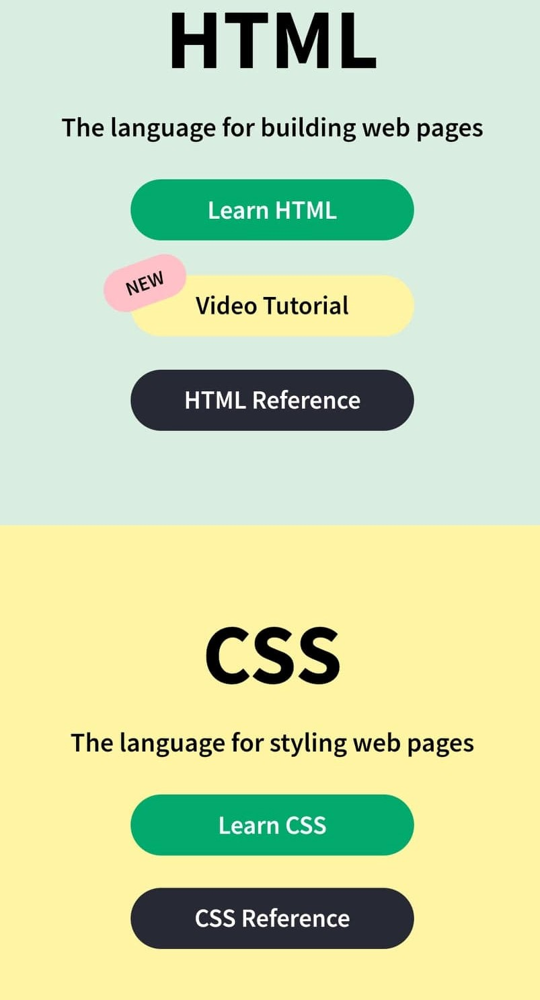

Hick's Law
Amazon
Amazon is a good example of Hick's law by drawing your attention to their deal of the day and other things you have looked at before. Amazon is known for their wide variety of products, however, you aren't bombared with them all at once. They promote a few items on their home page and leave the rest of the browsing to the user.
Visual Hierarchy
Crumbl Cookies
Crumbl Cookie uses Visual Hierarchy very well by immediately drawing your attention to videos of their cookies of the week. It's large and in your face to make you want to buy their cookies. It's then followed by a list of the cookies and ice creams of the week followed by information on how to buy them. They use visual hierarchy to make you want the product first.
Fitt's Law
W3 Schools
W3 Schools mobile webpage has large buttons and links. According the Fitt's law, this means that the user spends less time going to click or tap said links and buttons. Therefore, they use it to theit advantage.